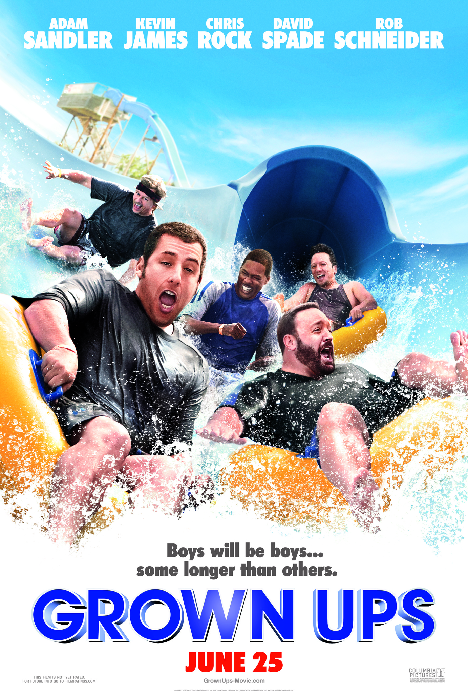

"Grown Ups" is a comedy film that follows a group of childhood friends, played by Adam Sandler, Kevin James, Chris Rock, David Spade, and Rob Schneider, who reunite after the death of their former basketball coach. The friends, now adults with their own families and responsibilities, spend a weekend together at a lake house, where they reminisce about their youth and navigate the challenges of adulthood. Throughout the film, the friends engage in various comedic antics and confront personal struggles, from dealing with insecurities to adjusting to family dynamics. As they reconnect, they learn valuable lessons about love, friendship, and the importance of cherishing the moments that truly matter.
